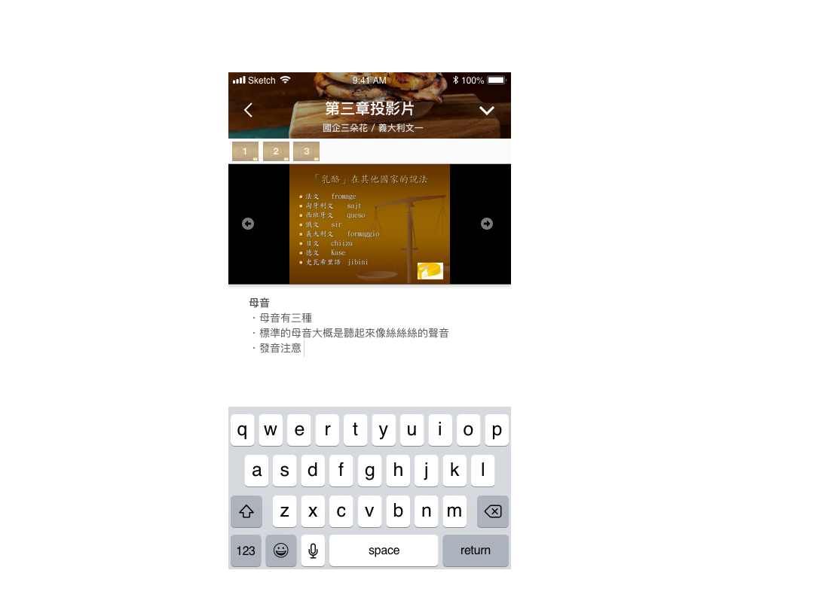

PROJECT
-


- 
NTU & ME for 2019 CHISDC
Problem | 降低通識課分組找組員的難度
藉由訪談與研究，了解到對所有年級的台大學生來說，學期初各大通識課的分組報告找不到組員是令他們感到煩惱和尷尬的主要問題之一，並且這個問題會導致上課體驗不佳。
Solution | APP一鍵配對找組員
設計一款學伴APP，串聯校園系統帳密帶入課程資料，根據偏好設定一鍵分組，降低門檻。並且依據學生們上課最需要的功能，附設共筆小組(串接Google雲端)、帶入課程投影片、通知作業死線、期末自動解散等。
My Role | 前期用戶研究及產品規劃
使用者訪談
以「上課時有哪些令你感到不便的地方」為題，針對十多位大一至碩二的台大學生進行訪談，並發現「通識課找不到組員」是大家共同的困境、成為團隊的專案目標。
製作人物誌
製作兩位Persona，性格外向、想從通識課多交朋友的外文系大一系核女孩以及邊緣人、不愛社交只想混過通識趕快畢業的資工大四宅男；代表台大中兩大類型的同學。
繪製各種地圖與User Flow
根據人物誌製作使用者旅程地圖、利害關係人地圖；繪製簡單的互動地圖，並據此畫出User Flow、確定操作邏輯流程，幫助UI experience組員製成Wireframe和簡易Prototype。